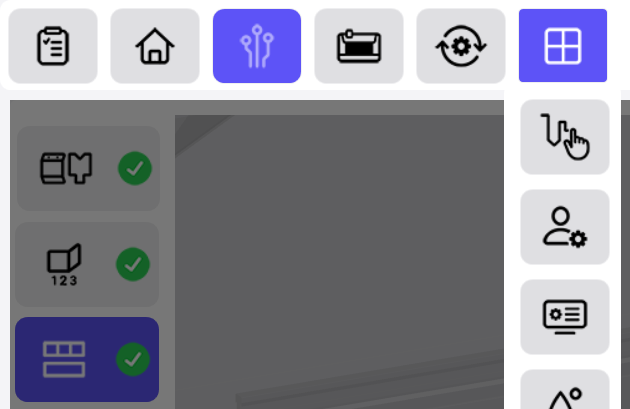
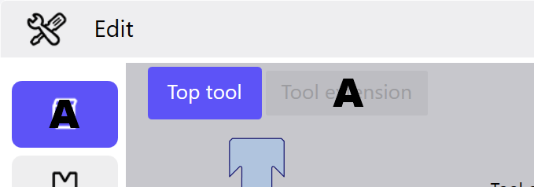

I menu, le finestre di dialogo e le funzioni sono quasi sempre contrassegnati da icone. Questo concetto facilita il funzionamento intuitivo del programma e crea un'interfaccia utente chiara.
Info: Quando si visualizzano e si nascondono le finestre di dialogo, la dimensione degli elementi visualizzati nell'interfaccia si adatta dinamicamente. Questo consente di visualizzare finestre di dialogo aggiuntive senza coprire le viste presenti.
Attraverso le icone nell'intestazione vengono richiamate tutte le aree e i moduli del programma (See «Elementi nell'intestazione»).
Selezionando l'area di testo (A) dell'intestazione vengono visualizzate le voci di menu aggiuntive. Non appena vengono selezionati altri pulsanti, queste voci di menu vengono nuovamente nascoste.

Selezionando la funzione Modificare la tecnologia sulla parte sinistra dello schermo, viene visualizzata la barra dei menu con i pulsanti dei singoli menu tecnologia.

La finestra di visualizzazione contiene la visualizzazione principale e diverse altre finestre di dialogo, a seconda della funzione selezionata. Nelle finestre di dialogo, in base al menu, sono visualizzati i processi di piegatura e le viste della sequenza di piegatura ed il piano delle stazioni.

Nella barra delle funzioni è possibile, tramite i tasti corrispondenti, avviare azioni o selezionare funzioni per la visualizzazione corrispondente. Se nella vista attuale non sono disponibili delle figure, la barra di funzionamento non viene visualizzata.

Nell'elenco dei messaggi vengono visualizzati tutti i messaggi in sospeso con lo stato e l'origine corrispondenti.

Queste finestre di dialogo vengono visualizzate automaticamente da destra a sinistra nell'interfaccia. La finestra di dialogo originale viene nascosta. Toccando l'intestazione (A) finestra di dialogo scompare e viene nuovamente visualizzata la finestra di dialogo precedente.

Per una chiara rappresentazione delle varie aree nel software, vengono utilizzate delle schede. Le rispettive finestre di dialogo vengono visualizzate toccando la scheda corrispondente. Ogni scheda è identificata da un simbolo o da un testo specifico (A).

Con questa tastiera sotto forma di finestra di dialogo è possibile inserire valori liberamente definibili in un determinato campo. La finestra di dialogo viene visualizzata non appena è stato selezionato un campo con valori liberamente definibili.

Con questa finestra di dialogo è possibile inserire valori numerici in un campo. La finestra di dialogo viene visualizzata non appena è stato selezionato un campo con valori numerici.

Con questa finestra di dialogo è possibile inserire valori predefiniti in un campo. La finestra di dialogo viene visualizzata non appena è stato selezionato un campo con valori predefiniti.